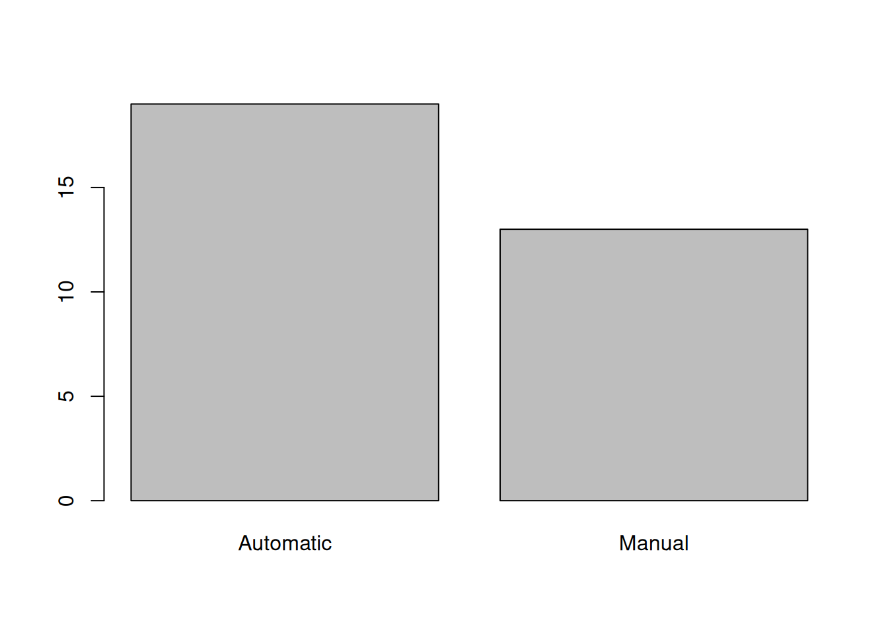
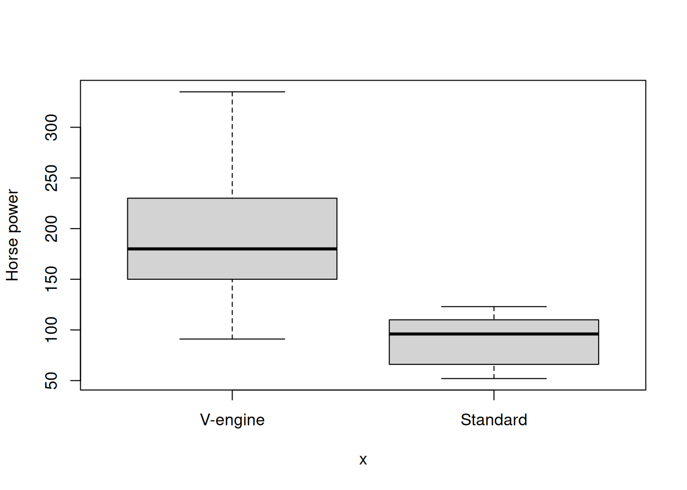
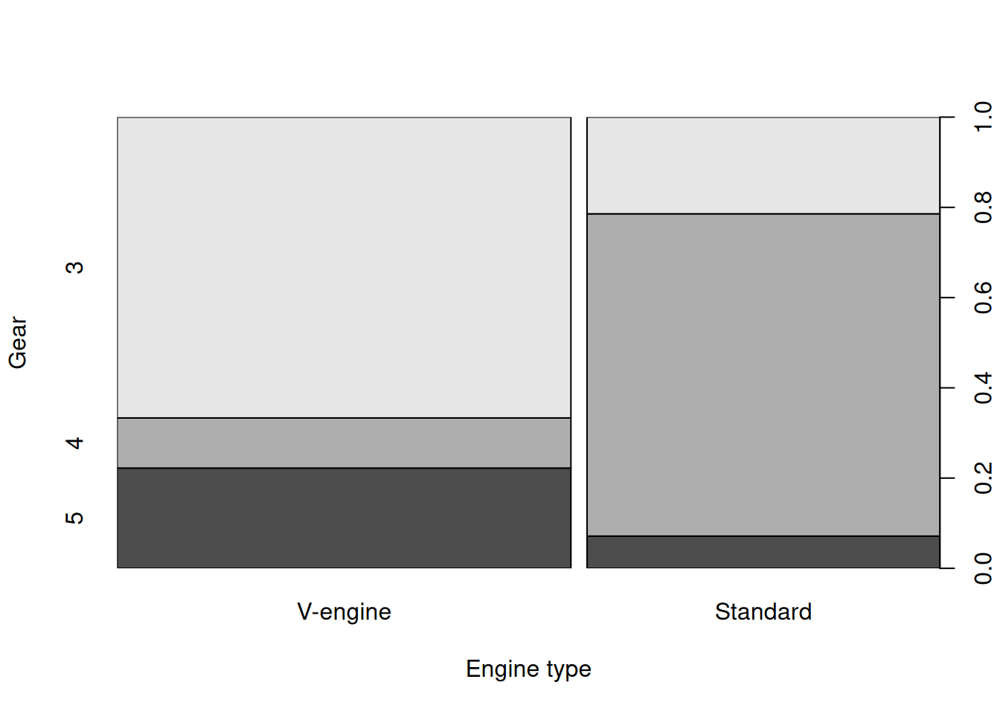

name <- c("Can","Cem","Hande","Mehmet","Deniz","Kemal","Derya","Fatma")
gender <- c("Male","Male","Female","Male","Female","Male","Female","Female")
mode(gender)[1] "character"Consider the following data table:
| Name | Gender | Month of Birth |
|---|---|---|
| Can | Male | January |
| Cem | Male | July |
| Hande | Female | May |
| Mehmet | Male | May |
| Deniz | Female | February |
| Kemal | Male | July |
| Derya | Female | May |
| Fatma | Female | April |
Gender and Month of Birth columns can be considered categories.Generate vectors to hold the relevant data.
name <- c("Can","Cem","Hande","Mehmet","Deniz","Kemal","Derya","Fatma")
gender <- c("Male","Male","Female","Male","Female","Male","Female","Female")
mode(gender)[1] "character"We can convert the gender vector to a factor variable using the factor() function.
gender_fac <- factor(gender)
gender_fac[1] Male Male Female Male Female Male Female Female
Levels: Female Malemode(gender_fac)[1] "numeric"The factor vector has an additional attribute, the levels information.
levels(gender_fac)[1] "Female" "Male" nlevels(gender_fac)[1] 2Also, common R functions handle factors in specialized ways.
summary(gender) # character vector Length Class Mode
8 character character summary(gender_fac) # factorFemale Male
4 4 One can change the level names easily using an assignment to the levels() function.
levels(gender_fac) <- c("F","M")
gender_fac[1] M M F M F M F F
Levels: F MInternally, categories are represented with integers starting at 1.
Elements of factor-valued vectors are selected in the same way as any other vector.
gender_fac[2:5][1] M F M F
Levels: F Mgender_fac[c(3,5,7:8)][1] F F F F
Levels: F MNote that after subsetting a factor object, the object continues to store all defined levels even if some of the levels are no longer represented in the subsetted object.
gender_fac[1] M M F M F M F F
Levels: F Mgender_fac=="M"[1] TRUE TRUE FALSE TRUE FALSE TRUE FALSE FALSEname[1] "Can" "Cem" "Hande" "Mehmet" "Deniz" "Kemal" "Derya" "Fatma" name[gender_fac=="M"][1] "Can" "Cem" "Mehmet" "Kemal" Sometimes we may want to remove one level in a category. For example, consider the following factor, where the same level is duplicated.
gender_fac <- factor(c("Male","Male","Female","Male","female","Male","female","Female"))
gender_fac[1] Male Male Female Male female Male female Female
Levels: female Female MaleThe factor has technically three levels, but actually "female" and "Female" are the same. Fix this by overwriting all occurrences of "female" with "Female".
gender_fac[gender_fac=="female"][1] female female
Levels: female Female Malegender_fac[gender_fac=="female"] <- "Female"
gender_fac[1] Male Male Female Male Female Male Female Female
Levels: female Female MaleHowever, the levels attribute still lists the invalid "female" category. To remove it, we use the droplevels() function. It removes all levels for which there are no entries.
gender_fac <- droplevels(gender_fac)
gender_fac[1] Male Male Female Male Female Male Female Female
Levels: Female MaleThe gender factor is an example of a nominal factor: There is no inherent order between levels. We cannot ask the question whether “Male” is greater than “Female” or not.
The month of birth information is an ordinal factor: Months appear in a certain order, so it makes sense to say that “January” < “February”.
| Name | Gender | Month of Birth |
|---|---|---|
| Can | Male | January |
| Cem | Male | July |
| Hande | Female | May |
| Mehmet | Male | May |
| Deniz | Female | February |
| Kemal | Male | July |
| Derya | Female | May |
| Fatma | Female | April |
Let’s store the observed month-of-birth (MOB) data as a character vector.
mob <- c("January","July","May","May","February","July","May","April")Two problems with this vector:
mob[1] < mob[5] # alphabetical ordering[1] FALSEWhen we create a factor object, we can set levels parameter of the factor() function to ensure that it holds all the levels of the factor in the correct order.
months <- c("January","February","March","April","May",
"June","July","August","September","October","November","December")mob_fac <- factor(mob, levels=months, ordered=TRUE)
mob_fac[1] January July May May February July May April
12 Levels: January < February < March < April < May < June < ... < DecemberComparisons can be done correctly:
mob_fac[1] < mob_fac[5] # January < February[1] TRUEThe summary() function gives a count of elements in each level.
summary(mob_fac) January February March April May June July August
1 1 0 1 3 0 2 0
September October November December
0 0 0 0 Earlier we have seen that combining two vectors into a single vector is done with the c() function:
x1 <- c(1,2,3,4)
x2 <- c(7,8,9)
c(x1, x2)[1] 1 2 3 4 7 8 9However, this does not work with factor objects:
mob_fac[1] January July May May February July May April
12 Levels: January < February < March < April < May < June < ... < Decembermob2 <- factor(c("April","March","May"), levels=months, ordered=TRUE)
mob2[1] April March May
12 Levels: January < February < March < April < May < June < ... < Decemberc(mob_fac, mob2) [1] January July May May February July May April
[9] April March May
12 Levels: January < February < March < April < May < June < ... < Decemberc() combines the numeric values of levels. Not what we want.
Factors are combined in an indirect way: First use the result of c() to index the months vector, which holds an ordered list of all categories. This will give a character vector:
levels(mob_fac) [1] "January" "February" "March" "April" "May" "June"
[7] "July" "August" "September" "October" "November" "December" levels(mob_fac)[ c(mob_fac, mob2) ] [1] "January" "July" "May" "May" "February" "July"
[7] "May" "April" "April" "March" "May" Then we convert this to a factor object
factor(levels(mob_fac)[ c(mob_fac, mob2) ], levels=levels(mob_fac), ordered=TRUE) [1] January July May May February July May April
[9] April March May
12 Levels: January < February < March < April < May < June < ... < DecemberIf we need to use this task frequently, we can write a function for it:
concat_factors <- function(f1, f2, ordered=TRUE) {
stopifnot( identical(levels(f1), levels(f2)) ) # ensure that the levels are the same
return( factor(levels(f1)[ c(f1,f2) ], levels=levels(f1), ordered=ordered) )
}concat_factors(mob_fac, mob2) [1] January July May May February July May April
[9] April March May
12 Levels: January < February < March < April < May < June < ... < DecemberOne can create categories from continuous data, such as Small/Medium/Large, or Low/High.
Example:
x <- c(11, 18, 36, 74, 43, 81, 95, 64, 32, 51)Suppose we want to categorize this data as small for values in [0, 30), medium for [30, 70), and high for [70, 100]. The notation [30,70) means that the value 30 belongs to this category, but 70 does not.
The cut() function generates a factor object with the interval end specified by the breaks parameter.
cut(x, breaks=c(0, 30, 70, 100)) [1] (0,30] (0,30] (30,70] (70,100] (30,70] (70,100] (70,100] (30,70]
[9] (30,70] (30,70]
Levels: (0,30] (30,70] (70,100]However, note that the ends of the intervals are not as we want. The first value of the boundary in not included in the interval, but the second value is.
To fix this, we set the parameter right to FALSE.
cut(x, breaks=c(0, 30, 70, 100), right = F) [1] [0,30) [0,30) [30,70) [70,100) [30,70) [70,100) [70,100) [30,70)
[9] [30,70) [30,70)
Levels: [0,30) [30,70) [70,100)But the last value 100 is excluded now. We can include it by setting the include.lowest parameter to TRUE.
cut(x, breaks = c(0, 30, 70, 100), right = F, include.lowest = T) [1] [0,30) [0,30) [30,70) [70,100] [30,70) [70,100] [70,100] [30,70)
[9] [30,70) [30,70)
Levels: [0,30) [30,70) [70,100]The levels can be set with the labels parameter.
cut(x, breaks = c(0, 30, 70, 100), right = F, include.lowest = T,
labels = c("Low","Medium","High")) [1] Low Low Medium High Medium High High Medium Medium Medium
Levels: Low Medium Highx [1] 11 18 36 74 43 81 95 64 32 51Suppose that we create a data frame out of name, gender, and mob vectors:
name <- c("Can","Cem","Hande","Mehmet","Deniz","Kemal","Derya","Fatma")
gender <- c("Male","Male","Female","Male","Female","Male","Female","Female")
mob <- c("January","July","May","May","February","July","May","April")
df <- data.frame(name, gender, mob, stringsAsFactors = F)
df name gender mob
1 Can Male January
2 Cem Male July
3 Hande Female May
4 Mehmet Male May
5 Deniz Female February
6 Kemal Male July
7 Derya Female May
8 Fatma Female Aprilsummary(df) name gender mob
Length:8 Length:8 Length:8
Class :character Class :character Class :character
Mode :character Mode :character Mode :character months <- c("January","February","March","April","May",
"June","July","August","September","October","November","December")
df$gender <- factor(df$gender)
df$mob <- factor(df$mob, levels=months, ordered = T)
summary(df) name gender mob
Length:8 Female:4 May :3
Class :character Male :4 July :2
Mode :character January :1
February:1
April :1
March :0
(Other) :0 What is the effect of the stringsAsFactors parameter?
df <- data.frame(name, gender, mob, stringsAsFactors = T)
summary(df) name gender mob
Can :1 Female:4 April :1
Cem :1 Male :4 February:1
Deniz :1 January :1
Derya :1 July :2
Fatma :1 May :3
Hande :1
(Other):2 Note that all fields are interpreted as factors in df, including names. The reason is that the stringsAsFactorsparameter is TRUE by default (for R versions older than 4.0.0). We can turn it off, and use the factor vectors we prepared before:
df <- data.frame(name, gender_fac, mob_fac, stringsAsFactors = FALSE )
summary(df) name gender_fac mob_fac
Length:8 Female:4 May :3
Class :character Male :4 July :2
Mode :character January :1
February:1
April :1
March :0
(Other) :0 As another example, consider the mtcars data set:
head(mtcars) mpg cyl disp hp drat wt qsec vs am gear carb
Mazda RX4 21.0 6 160 110 3.90 2.620 16.46 0 1 4 4
Mazda RX4 Wag 21.0 6 160 110 3.90 2.875 17.02 0 1 4 4
Datsun 710 22.8 4 108 93 3.85 2.320 18.61 1 1 4 1
Hornet 4 Drive 21.4 6 258 110 3.08 3.215 19.44 1 0 3 1
Hornet Sportabout 18.7 8 360 175 3.15 3.440 17.02 0 0 3 2
Valiant 18.1 6 225 105 2.76 3.460 20.22 1 0 3 1The summary() function returns the summary statistics for each numeric field.
summary(mtcars) mpg cyl disp hp
Min. :10.40 Min. :4.000 Min. : 71.1 Min. : 52.0
1st Qu.:15.43 1st Qu.:4.000 1st Qu.:120.8 1st Qu.: 96.5
Median :19.20 Median :6.000 Median :196.3 Median :123.0
Mean :20.09 Mean :6.188 Mean :230.7 Mean :146.7
3rd Qu.:22.80 3rd Qu.:8.000 3rd Qu.:326.0 3rd Qu.:180.0
Max. :33.90 Max. :8.000 Max. :472.0 Max. :335.0
drat wt qsec vs
Min. :2.760 Min. :1.513 Min. :14.50 Min. :0.0000
1st Qu.:3.080 1st Qu.:2.581 1st Qu.:16.89 1st Qu.:0.0000
Median :3.695 Median :3.325 Median :17.71 Median :0.0000
Mean :3.597 Mean :3.217 Mean :17.85 Mean :0.4375
3rd Qu.:3.920 3rd Qu.:3.610 3rd Qu.:18.90 3rd Qu.:1.0000
Max. :4.930 Max. :5.424 Max. :22.90 Max. :1.0000
am gear carb
Min. :0.0000 Min. :3.000 Min. :1.000
1st Qu.:0.0000 1st Qu.:3.000 1st Qu.:2.000
Median :0.0000 Median :4.000 Median :2.000
Mean :0.4062 Mean :3.688 Mean :2.812
3rd Qu.:1.0000 3rd Qu.:4.000 3rd Qu.:4.000
Max. :1.0000 Max. :5.000 Max. :8.000 However, it makes more sense to treat "cyl", "vs", "am", "gear" and "carb" as categorical variables.
mtcars$cyl <- factor(mtcars$cyl, ordered=TRUE)
mtcars$gear <- factor(mtcars$gear, ordered=TRUE)
mtcars$carb <- factor(mtcars$carb, ordered=TRUE)
mtcars$vs <- factor(mtcars$vs)
mtcars$am <- factor(mtcars$am)Now we can use the summary() function to get the counts of categories in each factor field.
summary(mtcars) mpg cyl disp hp drat
Min. :10.40 4:11 Min. : 71.1 Min. : 52.0 Min. :2.760
1st Qu.:15.43 6: 7 1st Qu.:120.8 1st Qu.: 96.5 1st Qu.:3.080
Median :19.20 8:14 Median :196.3 Median :123.0 Median :3.695
Mean :20.09 Mean :230.7 Mean :146.7 Mean :3.597
3rd Qu.:22.80 3rd Qu.:326.0 3rd Qu.:180.0 3rd Qu.:3.920
Max. :33.90 Max. :472.0 Max. :335.0 Max. :4.930
wt qsec vs am gear carb
Min. :1.513 Min. :14.50 0:18 0:19 3:15 1: 7
1st Qu.:2.581 1st Qu.:16.89 1:14 1:13 4:12 2:10
Median :3.325 Median :17.71 5: 5 3: 3
Mean :3.217 Mean :17.85 4:10
3rd Qu.:3.610 3rd Qu.:18.90 6: 1
Max. :5.424 Max. :22.90 8: 1 levels(mtcars$am)[1] "0" "1"The "vs" (V engine or straight) and "am" (Automatic or manual transmission) fields have level values 0 or 1. Let’s replace them with clearer labels.
levels(mtcars$vs) <- c("V-engine","Standard")
levels(mtcars$am) <- c("Automatic","Manual")summary(mtcars) mpg cyl disp hp drat
Min. :10.40 4:11 Min. : 71.1 Min. : 52.0 Min. :2.760
1st Qu.:15.43 6: 7 1st Qu.:120.8 1st Qu.: 96.5 1st Qu.:3.080
Median :19.20 8:14 Median :196.3 Median :123.0 Median :3.695
Mean :20.09 Mean :230.7 Mean :146.7 Mean :3.597
3rd Qu.:22.80 3rd Qu.:326.0 3rd Qu.:180.0 3rd Qu.:3.920
Max. :33.90 Max. :472.0 Max. :335.0 Max. :4.930
wt qsec vs am gear carb
Min. :1.513 Min. :14.50 V-engine:18 Automatic:19 3:15 1: 7
1st Qu.:2.581 1st Qu.:16.89 Standard:14 Manual :13 4:12 2:10
Median :3.325 Median :17.71 5: 5 3: 3
Mean :3.217 Mean :17.85 4:10
3rd Qu.:3.610 3rd Qu.:18.90 6: 1
Max. :5.424 Max. :22.90 8: 1 When we specify a factor-type vector as data, the plot() function displays a bar plot.
plot(mtcars$am)
When the x-axis is categorical and the y-axis is numerical, a boxplot is displayed.
plot(x = mtcars$vs, y=mtcars$hp, ylab="Horse power")
If both axes are categorical, a stacked bar plot is displayed.
plot(x = mtcars$vs, y=mtcars$gear, xlab="Engine type",ylab="Gear")
table() functionThe table() function can be used to return counts of elements in each level of a categorical variable.
affils <- c("R","D","D","R","U","D") # political party affiliations
table(affils)affils
D R U
3 2 1 It can be used to create contingency tables, such as two-way tables:
table(mtcars$am, mtcars$vs)
V-engine Standard
Automatic 12 7
Manual 6 7Or three-way tables:
table(mtcars$am, mtcars$vs, mtcars$gear,
dnn=c("Transmission","Engine","Gears")), , Gears = 3
Engine
Transmission V-engine Standard
Automatic 12 3
Manual 0 0
, , Gears = 4
Engine
Transmission V-engine Standard
Automatic 0 4
Manual 2 6
, , Gears = 5
Engine
Transmission V-engine Standard
Automatic 0 0
Manual 4 1tapply() functiontable().tapply(x, f, func) breaks the vector x by levels given in f and applies the function func on each subgroup.ages <- c(25, 26, 55, 37, 21, 42) # ages of some people
affils <- c("R","D","D","R","U","D") # party affiliations of the same people
tapply(ages, affils, mean) D R U
41 31 21 Look at the iris database.
head(iris) Sepal.Length Sepal.Width Petal.Length Petal.Width Species
1 5.1 3.5 1.4 0.2 setosa
2 4.9 3.0 1.4 0.2 setosa
3 4.7 3.2 1.3 0.2 setosa
4 4.6 3.1 1.5 0.2 setosa
5 5.0 3.6 1.4 0.2 setosa
6 5.4 3.9 1.7 0.4 setosatapply(iris$Sepal.Length, iris$Species, mean) setosa versicolor virginica
5.006 5.936 6.588 Get the mean miles-per-gallon, broken by the engine type.
tapply(mtcars$mpg, mtcars$vs, mean)V-engine Standard
16.61667 24.55714 Get the mean miles-per-gallon, broken by the engine type and transmission type.
tapply(mtcars$mpg, list(mtcars$vs, mtcars$am), mean) Automatic Manual
V-engine 15.05000 19.75000
Standard 20.74286 28.37143